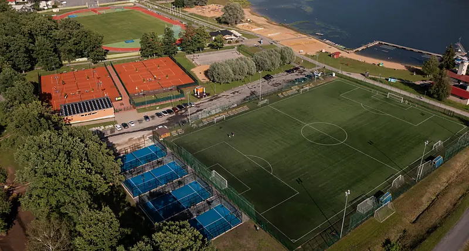

Klubi aastast 1924.
Tennise- ja padeliklubi Fellin on mittetulundusühing, mis haldab Viljandi tennise- ja padelikeskust ning Ott Ahoneni tennise- ja padelikooli.
Kes me oleme?
 Klubi
Klubi Keskus
Keskus Kool
Kool
Ajalugu
- 1924Viljandi tenniseklubi asutatakse vee- ja motospordi klubi koosseisus
- 1999Tenniseklubi Fellin registreeritakse mittetulundusühinguna
- 2005Ott Ahoneni tennisekool alustab erahuvikoolina
- 2023Klubi hakkab haldama järveäärseid padeliväljakuid ja õpetama padelit
- 2024Uus nimi: Viljandi tennise- ja padeliklubi Fellin
Viljandis alustanud parimad
Markus Kerner, Diana Klavan, Anelle Luik, Annemai Mutso, Saara Orav, Sonja Anderson, Steven Tensing, Brit Martin, Bert Martin, Kendra Aidla — Eesti noorte meistrivõistluste medalivõitjad.
Klubi FacebookisEuroopa Liidu toetus.

Projekti “Salvestusseadmete paigaldamine Tennisekeskus OÜ varustuskindluse ja taastuvenergia kasutamise osakaalu suurendamiseks” on toetanud Euroopa Liit taasterahastu NextGenerationEU vahenditest summas 67 710 €. Projekti eesmärk on suurendada taastuvenergia osakaalu ettevõtte elektritarbimises ja varustuskindlust. Projekti sisuks on akude paigaldamine Tabasalu ja Viljandi tennisehallide juurde.

Projekti „Tennisekeskus OÜ varustuskindluse tõstmine elektri salvestusseadmete soetamise kaudu“ on rahastanud Euroopa Liit taasterahastu NextGenerationEU vahenditest summas 10 362,40 €.
Kohtume väljakul.

- Sisehall · Kaalu 2Aasta läbi, iga päev 6–24
- Väliväljakud · Ranna pst 3Viljandi järve ääres, mai–oktoober
- +372 5036 425Keskus ja klubi · fellin@fellinrackets.ee
- +372 5649 4381Tennise- ja padelikool, Ott Ahonen · ott@fellinrackets.ee
Juriidiline aadress (ei ole mängukoht): Reinu tee 18, 71020 Viljandi
Kaart
Kaart laaditakse Google'i serverist ja Google võib seejuures salvestada küpsiseid.
Ava Google MapsisKaardil on kolm märki: tennisehall (Kaalu 2), väliväljakud (Ranna pst 3) ja klubi kontor — kontor ei ole mängukoht.